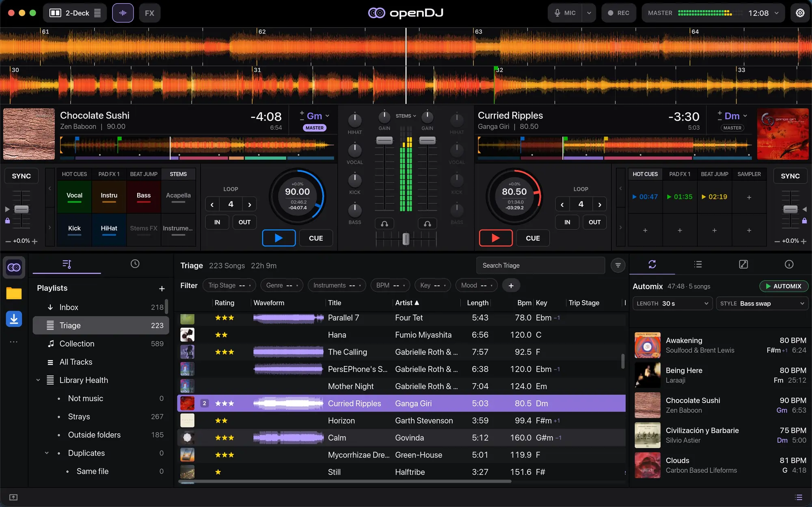
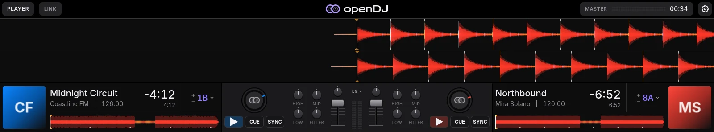

macOS, Linux and Windows · Free and open source
Open-source DJ software.
Music is the Medicine.
Two or four decks, a mixer, stems, effects and an Automix that blends for you. openDJ is fast, pleasant to use, and made for DJs just starting out and for experienced DJs alike. It's in beta, and we're building it with the DJs who test it.

Find the next track.
Search by title, artist, BPM or key, filter by tracks that mix with the one playing, and sort new music through stages.
Lock the grids.
Accurate beat grids that follow tempo changes, sync and quantize keep both decks in time.
Blend it in.
Gain, 3-band EQ, Color FX on the filter, faders and a crossfader, with headphone cue and a mic channel.
Make it yours.
Hot cues, saved loops, a 16-pad sampler, stem pads and beat-synced effects on every deck.
Beta testers wanted
Test it on your gear. Help build the best open-source DJ platform.
openDJ gets better with every controller, audio interface, laptop and music collection it meets. Play your real sets on it, tell us what works and what doesn't, and help decide what comes next. No sign-up: download it and start.
- 01
Play your set
Install openDJ on macOS, Linux or Windows, plug in your controller and mix with your own music.
- 02
Tell us how it went
Settings → Feedback in the app opens a report with your version filled in, and the folder with your logs to attach. A controller that misbehaves gets its own short form.
- 03
Shape what's next
Vote on features. Testers are thanked by name in the release notes, and their controllers get fixed first.
Automix
Let Automix take the next one.
- Queue your tracks. Drag them into the Automix list, or right-click any track and add it.
- Pick a length and a style. Short cuts or long, smooth blends, in seconds or bars.
- Press Automix. openDJ beatmatches and crossfades through the list while you step away, or jump in at any time.
Layouts
Room for the decks, or room for the music.
2-Deck gives you the full decks, pads and effects. 4-Deck puts four decks side by side, djay style. Simple shrinks the decks to one row so your library gets the screen, and a compact view hides the decks altogether.

Controllers · Mixxx mappings
Plug in your controller.
openDJ uses Mixxx's controller mappings, so most MIDI controllers Mixxx supports work as soon as they're plugged in. No setup, no mapping files to hunt for.
The Controller Editor in Settings shows what every control does, with a picture of the DDJ-FLX4, Xone K2 and Midi Fighter Twister: press a control to find it. Every mapping also has its own page in the docs.
HID controllers aren't supported yet. If yours doesn't work right, tell us which one and testers' controllers are fixed first.
Everything a mix needs.
- 01
Beat grids
Grids that follow tempo changes, with tools to fix them by hand.
- 02
Key mixing
Key lock, harmonic or fuzzy key matching, and tracks shifted to mix as they load.
- 03
Stems
Split any track into vocals, drums, bass and the rest as it loads, then play them from the pads.
- 04
Phrases
Intro, build, drop, break and outro, shown as a coloured bar under each deck.
- 05
Sampler
16 pads with sample packs, and your own sounds dropped straight on a pad.
- 06
Record your mix
WAV or FLAC, with a tracklist and every move you made logged next to it.
- 07
Ableton Link
Play in time with other apps and devices on your network.
- 08
Library Health
Find duplicates, missing files and tracks with no tags, and fix them in batches.
- 09
Bring your library
Import from VirtualDJ, and export lists to a USB stick for Pioneer players (experimental).
How it compares
openDJ, Mixxx and rekordbox.
The big things at a glance, including what's on the way.
| Feature | openDJ | Mixxx 2.5 | rekordbox 7 |
|---|---|---|---|
| Price | Free, open source | Free, open source | Free, paid plans for more |
| Runs on | macOS, Linux, Windows Windows in 0.4 | macOS, Linux, Windows | macOS, Windows |
| Beat grids that follow tempo changes | Yes | Constant tempo only | Yes |
| Stems from any track | Yes | Stem files only (2.6 beta) | Yes |
| Phrase detection | Yes | No | Yes |
| Automix | Yes beat-matched blends | Auto DJ | Yes |
| Ableton Link | Yes | No | Yes |
| MIDI controllers | Yes 140+ Mixxx mappings | Yes, plus HID | Pioneer DJ, others by MIDI mapping |
| Mapping editor, MIDI learn | Planned for 1.0 view-only today | Yes | Yes |
| Import other DJ libraries | VirtualDJ rekordbox planned | rekordbox, Serato, Traktor, iTunes | iTunes / Apple Music |
| USB export for Pioneer players | Experimental, in 0.4 | No | Yes |
| DVS timecode vinyl | Planned after 1.0 | Yes | Yes |
| Streaming services | Browse only, plays your own files | No | TIDAL, Beatport, SoundCloud and more |
| Control from an AI assistant | Planned for 1.0 | No | No |
Mixxx and rekordbox from their public pages, October 2026. Some rekordbox features need a subscription or Pioneer DJ hardware. See the release notes for what's in each openDJ version.
Under the hood
Rust, end to end.
openDJ is a ground-up rewrite in Rust that follows Mixxx's control names and controller mapping format, so Mixxx mappings run unchanged. It keeps its own library and doesn't read Mixxx's database. The interface is built with Slint, and the waveforms are drawn with wgpu shaders. It's free software under the GPL, version 2 or later.
Download the openDJ beta.
Free, for macOS, Linux and Windows. Version 0.4.0.
macOS
Apple Silicon and Intel, macOS 11 or newer.
Download for MacSigned and notarized by Apple. openDJ updates itself from 0.3.0 on.
Linux
x86_64, glibc 2.35 or newer (Ubuntu 22.04+, Fedora 36+, Debian 12+).
Download AppImage or the .tar.gzWindows Preview
64-bit Windows 10 or 11, with Windows Audio and ASIO drivers.
Coming in 0.4 or the portable .zipThe first release for Windows is on its way. Until it's signed, Windows asks before the first start (More info → Run anyway).
openDJ is in beta. Tell us how it runs on your setup: Settings → Feedback in the app, or open a report.
openDJ is free and always will be. If it plays a part in your sets, a coffee helps keep it going.
☕ Buy me a coffee